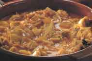

Menú C
SEPIA ENCEBOLLADA

Preparación:
- Se limpian las sepias eliminando piel e interiores, se cortan en trozos regulares.
- Se reserva la tinta.
- Se pelan y cortan las cebollas en ruedas o tiras finas.
- Se calienta un poco de aceite en la cazuela (6 cucharadas) y se rehogan las cebollas a fuego lento hasta que queden transparentes y sin apenas color.
- Tardará unos 10 minutos.
- En ese momento, se añaden los piñones, el laurel, los ajos picados, la sepia y el agua.
- Se sazona y se cuece a fuego lento, agitando la cazuela de vez en cuando, hasta que este hecho.
- Se prueba y rectifica el punto de sal y se sirve en la misma cazuela.